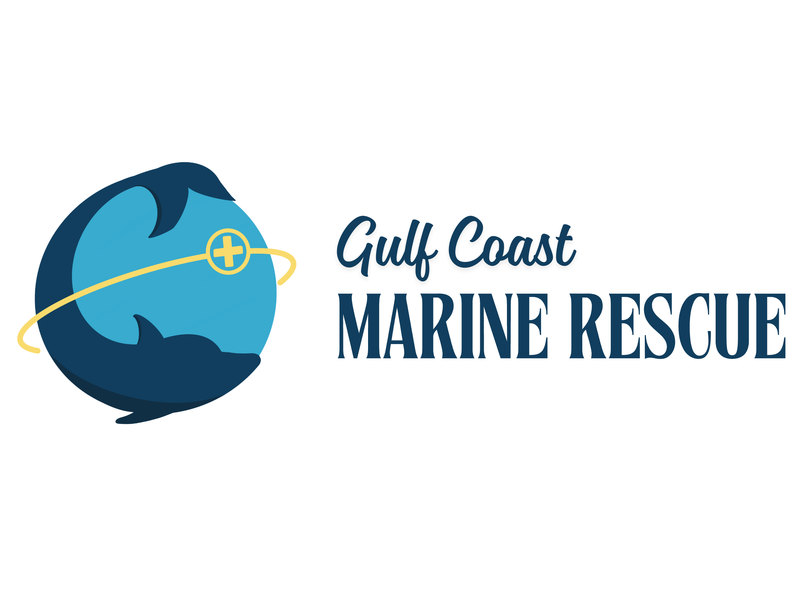

MAJOR PROJECT · 100 POINTS
Make It Findable | Laser-Ready Identity Tag
Design a small tag that helps someone identify, return, or sort a real school or lab item without showing private information.

Study how the central symbol stays recognizable when the graphic moves onto a small object. Your project follows the specific brief below.
Design brief: School and lab items get lost, mixed up, or returned to the wrong place. Make one 2-to-3-inch identity tag for a backpack, lanyard, pencil pouch, toolbox, device case, or shared supply bin. It should tell someone who the item belongs to or what the item is for, but it cannot show a full legal name, student ID, phone number, or other private information.
Day 2 | Define the need and sketch three ideas
- Choose one item and one user. You may design for yourself, a partner, or a shared class tool.
- Finish the statement: ______ needs a tag that helps ______ without showing ______.
- Sketch three different silhouettes. Do not draw the same idea three times.
- Each sketch must include a short privacy-safe identifier: initials, a short nickname, a role, or one word.
- Circle the idea that is easiest to recognize and strongest enough to become a physical object.
Purpose
Someone can identify, return, or sort the item.
Someone can identify, return, or sort the item.
Privacy
No full legal name, ID number, phone number, or private account information.
No full legal name, ID number, phone number, or private account information.
Size
The finished object is 2 to 3 inches and readable at arm’s length.
The finished object is 2 to 3 inches and readable at arm’s length.
Build the first laser-ready file
- Build one closed outer path for the cut.
- Add one bold icon and the short identifier inside the outline.
- Use the class operation plan to assign surface details to score or engrave.
- Keep important details away from the outside cut line and any keychain hole.
- For the xTool route, convert the identifier text to paths or outlines, then export SVG. XCS does not display live SVG text.
- For the Glowforge route, export SVG or the approved PDF. PDF is not the xTool route.
Cut silhouette
One closed outside shape. No accidental loose pieces.
One closed outside shape. No accidental loose pieces.
Surface information
One icon plus initials, a short nickname, a role, or one word.
One icon plus initials, a short nickname, a role, or one word.
Optional hole
A closed circle with enough material around it to stay strong.
A closed circle with enough material around it to stay strong.
Filename:
Submit the file only after it passes the file check.
Period-Lastname-Firstname-FindableTag.svgSubmit the file only after it passes the file check.
Day 3 | Test what the screen hides
- Print or trace the design at its real 2-to-3-inch size.
- Ask a partner to trace the outside cut path and point to each surface operation.
- Check whether the user can tell what the tag is for without seeing private information.
- Circle tiny details, weak bridges, loose pieces, doubled lines, or text that is hard to read.
- Make at least one useful revision and export the new file.
Partner stem: I think this tag is for ______ because I notice ______. I can follow the cut path around ______.
Designer stem: I changed ______ because the test showed ______.
Word bank: purpose · privacy · silhouette · closed path · bridge · loose piece · readable · scale · cut · score · engrave
Designer stem: I changed ______ because the test showed ______.
Word bank: purpose · privacy · silhouette · closed path · bridge · loose piece · readable · scale · cut · score · engrave
Day 4 | Fabricate, finish, document
- Work at the assigned station while your file moves through the fabrication queue.
- Stay outside the machine work zone unless directed.
- Finish the piece only after it is released to you.
- Photograph the front of the object in clear light.
- Save one screenshot of the final vector file.
Day 5 | Turn in
- Upload the final SVG. If your class used the approved Glowforge PDF route, upload the PDF instead.
- Upload the finished-object photo. If your class could not fabricate every file, upload the real-size test and final file instead.
- Upload the real-size test or a before-and-after screenshot that shows your revision.
- In the submission comment, answer both reflection prompts.
Reflection 1: The tag helps ______ identify, return, or sort ______ because ______.
Reflection 2: I changed ______ after the test because ______.
Reflection 2: I changed ______ after the test because ______.
Rubric
| Criterion | What counts | Points |
|---|---|---|
| Purpose and privacy | The tag clearly helps someone identify, return, or sort the chosen item without exposing private information. | 20 |
| Laser-ready geometry and file | The file has a closed outside path, correct size, usable vector structure, and no accidental loose or doubled paths. | 25 |
| Cut, score, and engrave plan | The operation choices match the silhouette, surface information, and approved class material plan. | 20 |
| Testing and revision | Evidence shows a real-size or file test, a specific problem, and a useful revision. | 20 |
| Documentation and reflection | The required files and images are clear, and both reflections explain the purpose and revision. | 15 |